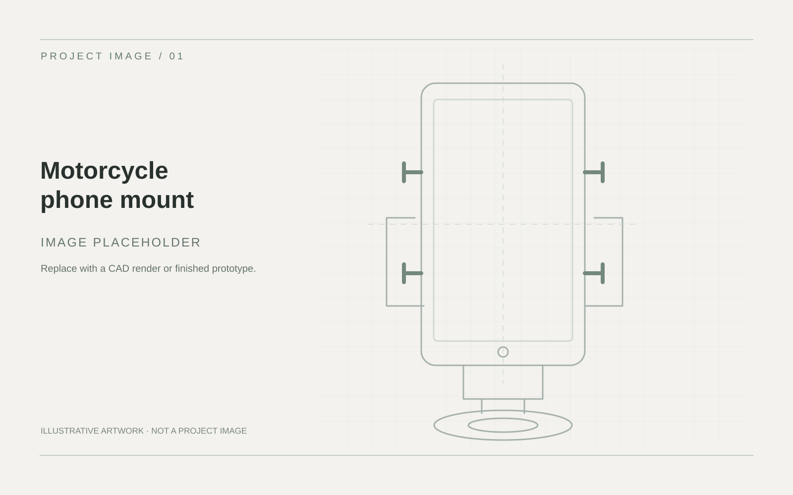
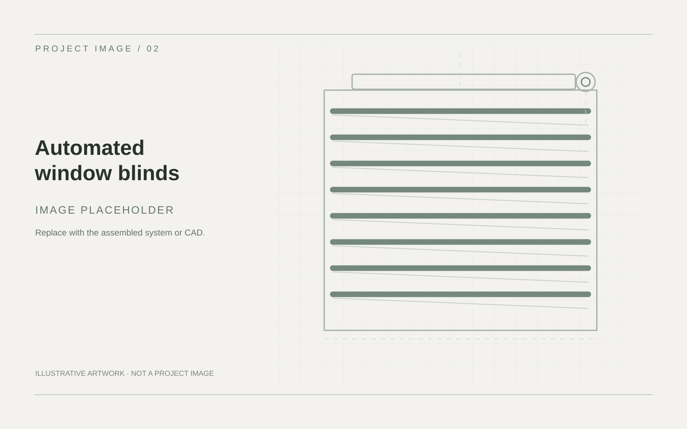
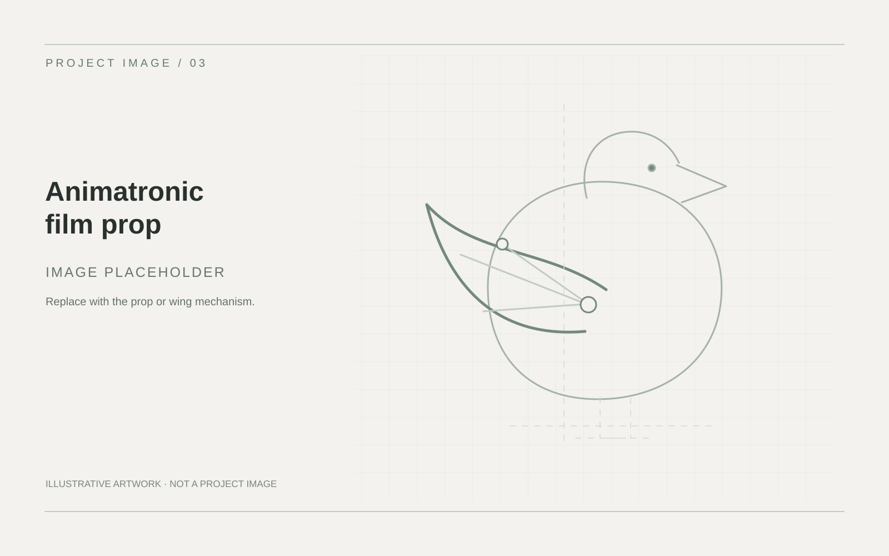
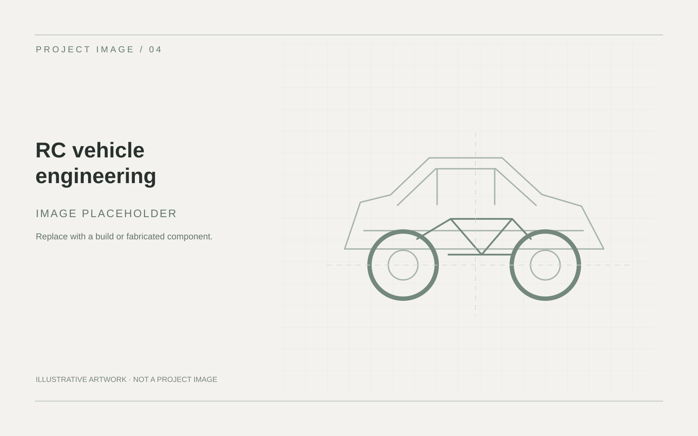
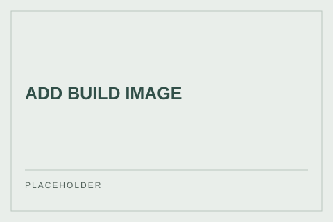

Featured project01
Motorcycle Phone Mount
Low-profile, fully 3D-printable mount exploring a quick-release mechanism and compliant springs.
View projectMechanical engineering portfolio
Mechanical Engineering Student
Mechanical design, prototyping and practical problem-solving across product, automotive and mechatronics projects.
Work shown here
Mechanisms 01
CAD & analysis 02
Built prototypes 03
Design decisions, technical evidence and finished hardware.
01 / Selected work
Mechanisms, analysis and hands-on builds. Open a project for its design process and evidence.

Low-profile, fully 3D-printable mount exploring a quick-release mechanism and compliant springs.
View project
ESP8266 blind system with CAD-designed parts, 3D printing and repurposed printer hardware.
View project
Servo-driven baby bird prop with a twitching wing linkage, Arduino control and practical fabrication.
View project
Custom parts, suspension and drivetrain modifications, repair and mechanical troubleshooting.
View project02 / Workshop notes
A place for smaller builds, repairs and experiments. Replace each prompt with a photograph and a specific result.

[ADD WHAT FAILED, HOW THE REPLACEMENT WAS MADE, AND A PHOTO.]
[ADD FIT CONSTRAINTS, CAD OR PRINT DETAIL, AND A FINISHED PHOTO.]
[ADD THE MECHANICAL PROBLEM, YOUR SOLUTION, AND EVIDENCE.]
[ADD A SPECIFIC REPAIR OR FABRICATION TASK AND ITS RESULT.]
[ADD A SMALL COMPONENT, DESIGN DECISION, AND PHOTO.]
[ADD A BUILD, THE MECHANICAL INTERFACE, AND EVIDENCE.]
03 / Technical toolkit
Edit this list to include only tools Daniel has actually used. Project pages should show where each was applied.
04 / About
I'm a mechanical engineering student interested in turning an idea into a working mechanism: modelling it, making it, testing it and improving the next iteration.
[ADD UNIVERSITY, COURSE, YEAR OF STUDY AND 1–2 SPECIFIC LINES ABOUT HANDS-ON OR AUTOMOTIVE EXPERIENCE.]
05 / Contact
For internships, vacation programs and undergraduate engineering opportunities.